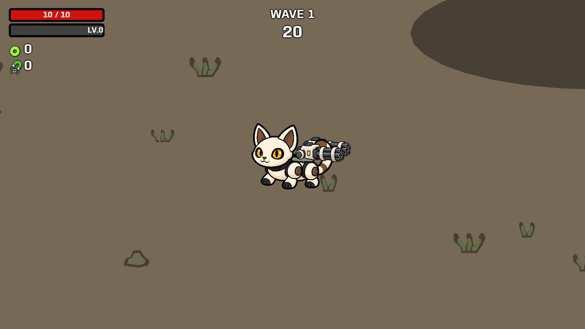
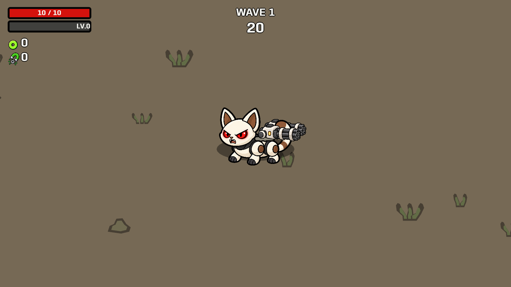
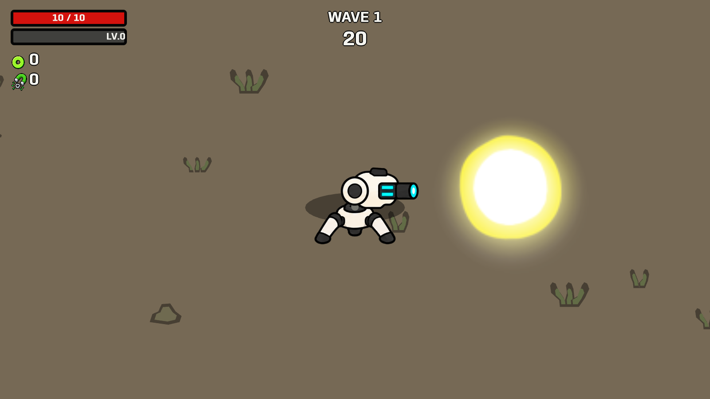
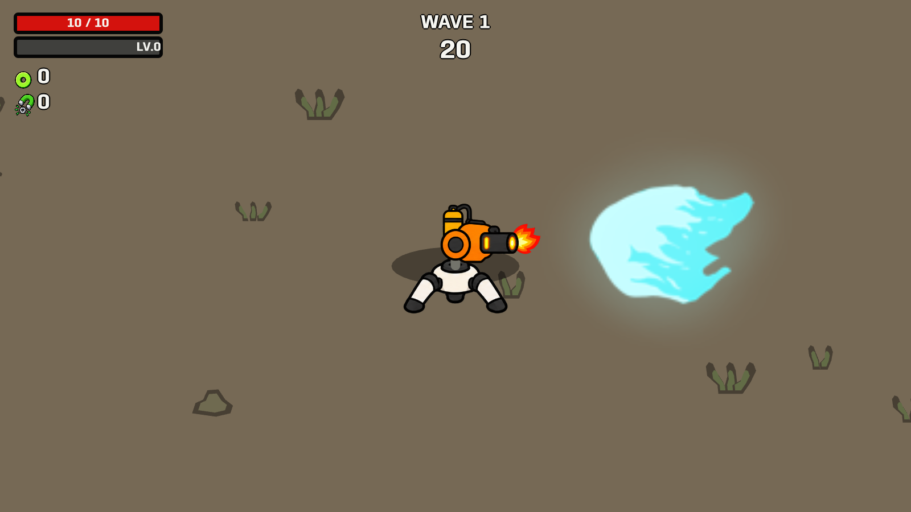
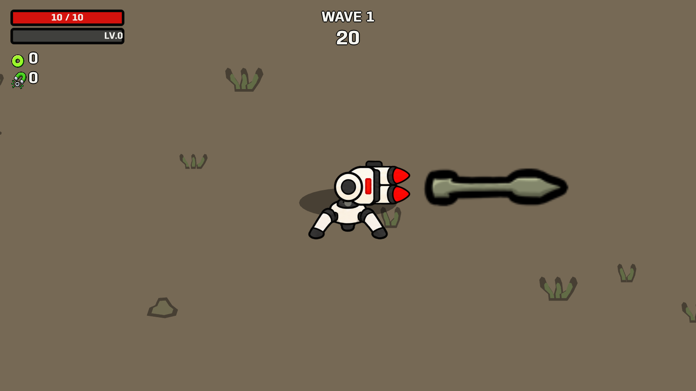
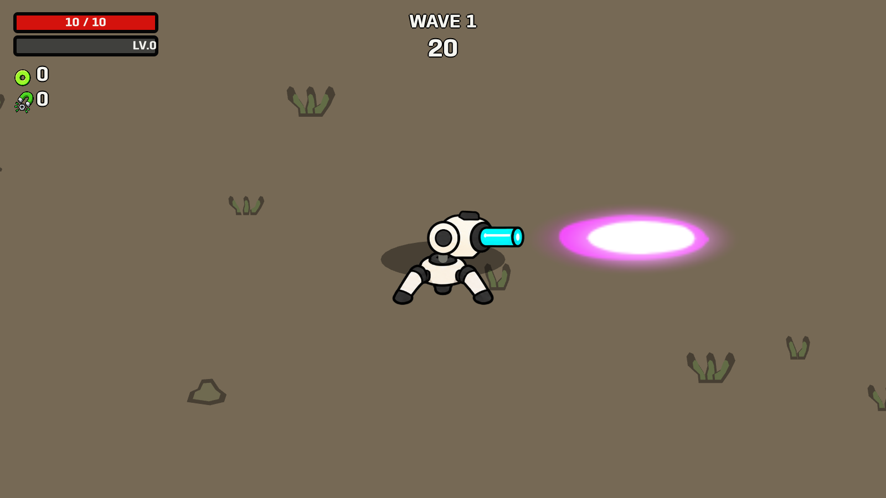
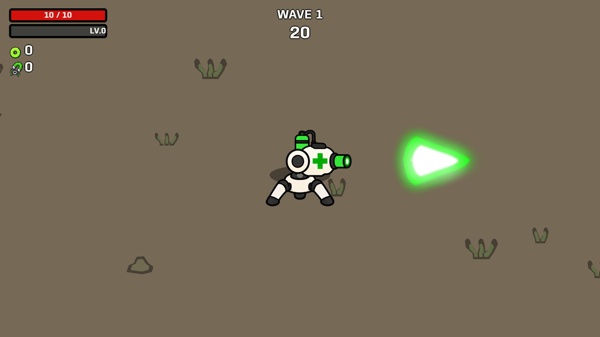

Golden eyes normally; glowing red eyes and an angry expression throughout proximity boost. The face restores when boost ends. Fixed gun mounts stay attached.
Launch updated support level � Built-player checks


Original projectile textures and frame timings: bullet, blue flame, rocket, laser and medical projectile. These are staged visual samples beside each turret.




